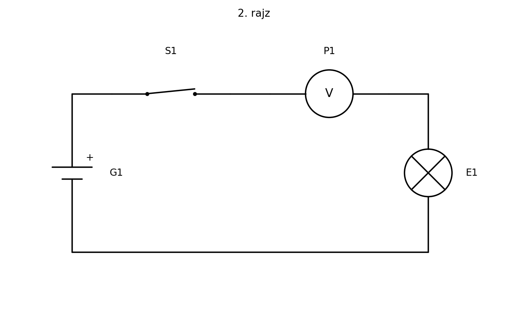
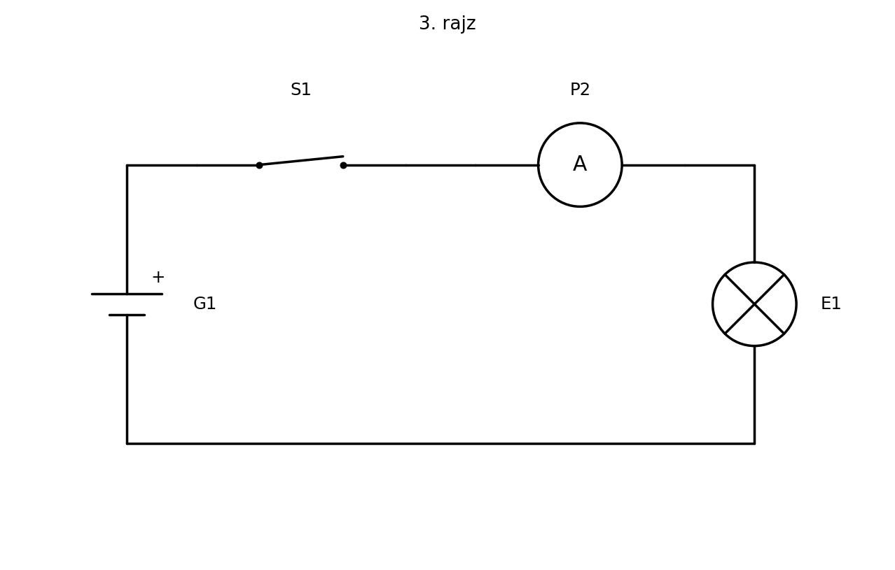
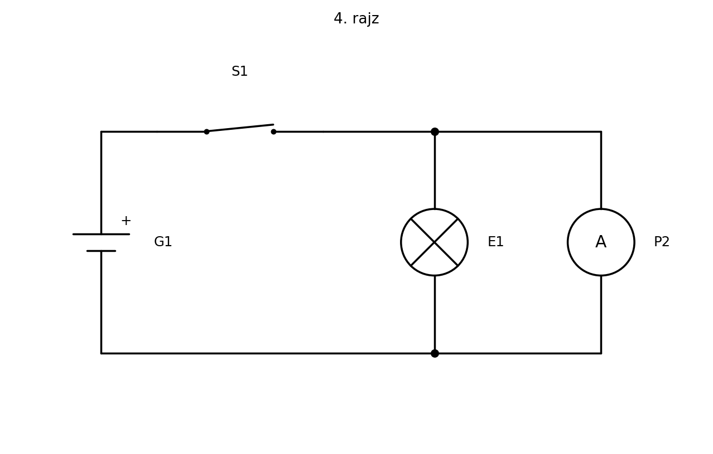
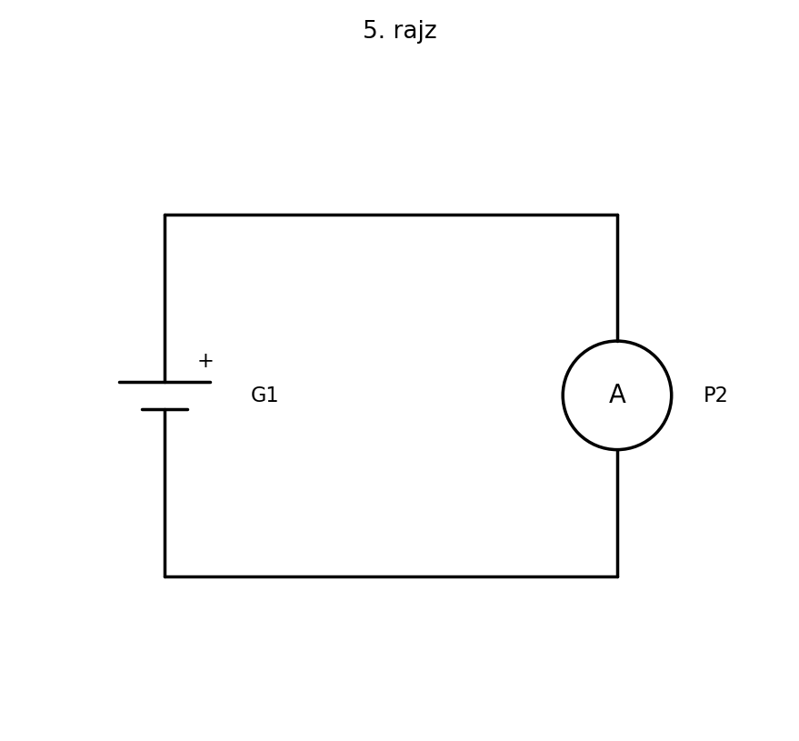
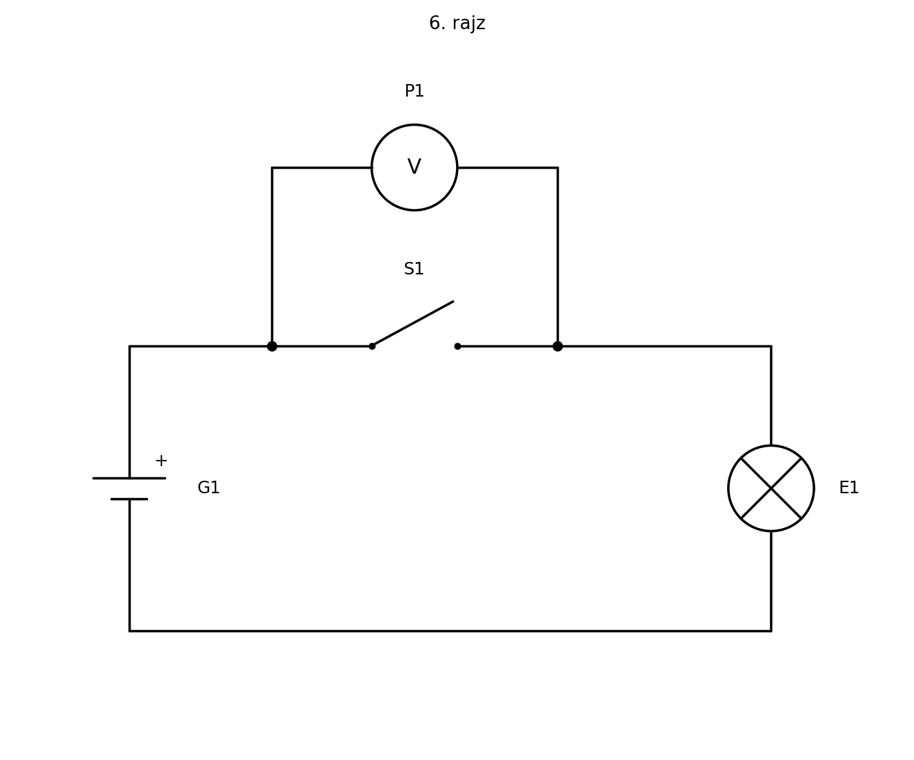
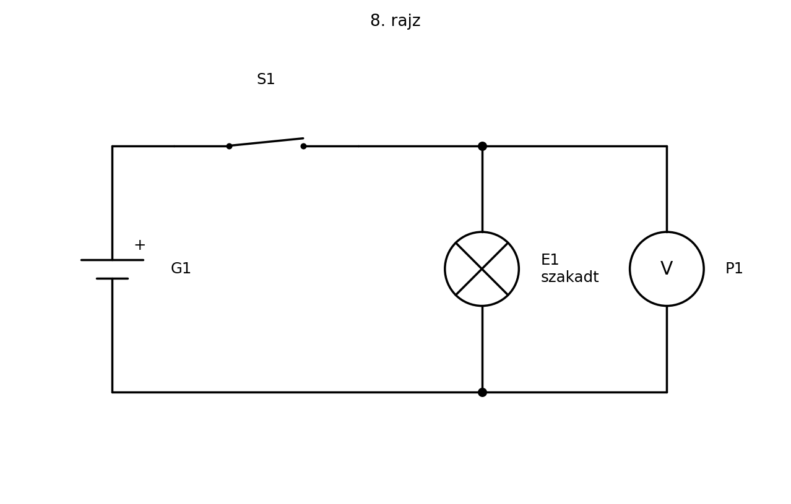
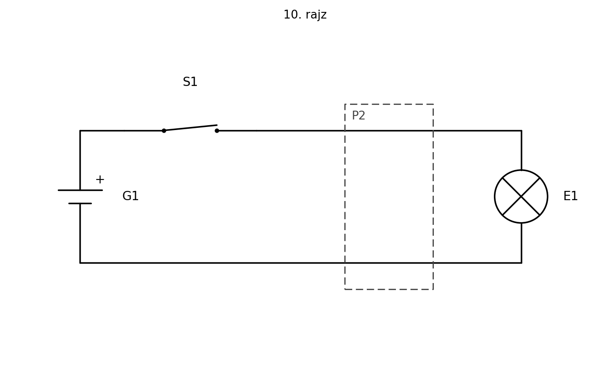

A kapcsolódó elmélet: tankönyv, 8.2 alfejezet.
Cél: a feszültség-, ellenállás-, folytonosság- és árammérés helyes bekötésének gyakorlása törpefeszültségű áramkörön.
Eszközök és anyagok: digitális multiméter, tanműhelyi egyenfeszültségű tápegység, izzó vagy ellenállás, kapcsoló, ismert értékű ellenállások, dióda, lakatfogó (ha rendelkezésre áll).
Biztonsági korlát. Ez a feladat tanműhelyi, törpefeszültségű környezetre vonatkozik, és kizárólag jogosult oktató felügyeletével végezhető. Hálózati feszültségen önállóan ne mérj.
Az öt biztonsági szabály rövid alkalmazása:
Számozott lépések:
VΩ aljzatba, a feketét a COM
aljzatba csatlakoztasd. Kapcsold be az áramkört, és mérd meg a tápegység
kimeneti feszültségét, majd az izzó kapcsait (a bekötési ábra 1. képe).
A két értéknek az áramkör szerint kell egyeznie.OL kijelzést várj.A vagy
mA aljzatba áthelyezni. Szakítsd meg az áramkört az izzó
előtt, és a műszert a két megszakítási pont közé kösd (a bekötési ábra
2. képe). Kapcsold be a tápegységet, és olvasd le az áramot. A mérés
végén a piros zsinórt tedd vissza a VΩ aljzatba.Ellenőrzési pontok:
Tipikus hibák ebben a gyakorlatban:
OL értéket mutat.VΩ aljzatban maradt.Dokumentálás: a mért értékeket rögzítsd egy jegyzőkönyvben: mérési pont, műszer típusa, méréshatár, mért érték, egység, dátum és aláírás.
Tünet. Egy tanműhelyi áramkörben a szerelő azt
tapasztalja, hogy a digitális multiméter feszültségméréskor folyamatosan
0 értéket mutat, pedig az áramkörben a lámpa világít.
Hipotézis. A mérési összeállításban van a hiba, nem a tápegységben: a lámpa világít, a másik műszer is feszültséget mér a kimeneten.
Mérés. A szerelő egy másik műszerrel megméri a tápegység kimenetét, ott a feszültség rendben van. Ezután ellenőrzi a multiméter forgókapcsolóját és a zsinórokat: a forgókapcsoló váltakozó feszültség (ACV) állásban van, a tanműhelyi tápegység viszont egyenfeszültséget ad. A mérőzsinórt külön folytonosságméréssel is ellenőrzi (a két zsinór összeérintésekor hangjelzés kell).
Ok. A műszer AC állásban volt, a jel viszont
egyenfeszültség: sok műszer ilyenkor
körüli értéket mutat. (Másik gyakori ok a belül szakadt mérőzsinór.) A
felcserélt zsinór (piros a COM, fekete a VΩ
aljzatban) nem okoz nullát: a mérőkör nem szakad meg,
egyenfeszültségen csak negatív előjelű értéket látunk, váltakozón a
kijelzés változatlan.
Javítás. A forgókapcsolót DC állásba kell tenni, a
zsinórokat a helyes aljzatba (fekete COM, piros
VΩ), majd ismert feszültségforráson ellenőrizni a
műszert.
Megelőzés. Minden mérés előtt használjuk a mérés előtti ellenőrzőlistát, és egy ismert feszültségű forráson ellenőrizzük a műszer működését. A mérőzsinórokat színük és feliratuk alapján kezeljük, ne hagyjuk őket összekeveredve.
1. feladat (A). Sorolj fel legalább három üzemmódot, amelyet egy digitális multiméter általában ismer, és mindegyikhez írd le a helyes bekötést egy mondatban.
2. feladat (A). Egy multiméter feszültségmérő bemeneti ellenállása . Két -os ellenállásból álló feszültségosztó felső ellenállásán mérünk feszültséget tápfeszültségnél. Mennyi a mért feszültség, ha a műszer terhelő hatását elhanyagoljuk? Mennyi lenne, ha a műszert figyelembe vennénk a felső ellenálláson?
3. feladat (B). Egy villanyszerelő árammérést végez. A multiméter mA-bemenetének belső ellenállása . A mért áram . Mekkora feszültség esik a műszeren? Hány százalékos hibát okoz ez egy -os fogyasztói áramkörben?
4. feladat (B). Rajzold le (szöveges leírással vagy kapcsolási rajzzal), hogyan kell egy multimétert bekötni egy izzó feszültségének méréséhez, és hogyan kell bekötni ugyanazon izzó áramának méréséhez. Mi a különbség a két bekötés között?
5. feladat (C). Egy elosztóban a mérést CAT II 300 V-os multiméterrel kezdenéd el. Az oktató szerint ez nem megfelelő. Magyarázd el, miért, és milyen műszert választanál helyette.
6. feladat (D). Egy tanműhelyi mérésnél a multiméter folytonosságmérésnél folyamatos hangjelzést ad, amikor a mérőzsinórokat egymáshoz érsz, de a vizsgált motor tekercsén nem szólal meg. A tekercs jó állapotú. Mi lehet a hiba a mérési eljárásban? Írd le a hipotézist, a mérési lépést, az okot és a javítást.
7. feladat (B). Egy irodai elosztó háromfázisú leágazásán a fázisáramok 12,3 / 11,8 / 12,1 A, a nullavezetőn 17,9 A folyik, a PE-n 0 A. Mire következtetsz, és mit ellenőrzöl?
8. feladat (D). Egy 7,5 kW-os motor (névleges áram kb. 14,5 A) áramai 14,2 / 14,4 / 0,6 A, a motor zúg és melegszik. Mi lehet a hiba, és mi a teendő?
Önellenőrzés – válaszok
1. feladat (A).
2. feladat (A).
Ideális esetben a felső ellenálláson a feszültség:
A műszer párhuzamos a felső ellenállással:
A mért feszültség:
A műszer terhelő hatása miatt a mért érték alacsonyabb az ideálisnál.
3. feladat (B).
A műszeren eső feszültség:
A -os áramkörben a relatív hiba:
A hiba kicsi, tehát a mérés elfogadható.
4. feladat (B).
Feszültségmérés: a voltmérőt az izzó két kivezetésére, azaz párhuzamosan kötjük. A kapcsoló és a tápegység áramköre változatlan marad; a műszer nem szakítja meg az áramutat.
Árammérés: az áramkört feszültségmentes állapotban megszakítjuk, például az izzó előtt, és a multimétert a szakadás két vége közé iktatjuk. A műszer így sorba kerül az izzóval, és azon is átfolyik a mérendő áram.
A különbség az, hogy a voltmérő párhuzamos és nagy ellenállású, míg az ampermérő soros és kis ellenállású.
5. feladat (C).
A CAT II kategória elsősorban végfelhasználói, dugaszolható készülékek áramköreire való, ahol a tranziens túlfeszültségek kicsik. Egy elosztóban – legyen az lakás- vagy ipari elosztó – a hálózati csatlakozáshoz közelebbi ponton dolgozunk, ahol kapcsolási tranziensek és induktív terhelések miatt nagyobb túlfeszültségek léphetnek fel. Ide CAT III vagy CAT IV besorolású, megfelelő névleges feszültségű műszer, és azzal egyező CAT-besorolású mérőzsinór szükséges. A CAT-jelölés mindig kategória és névleges feszültség párja (pl. CAT III 600 V). Háromfázisú elosztóban a fázisok között is mérhető, ezért egy „300 V” névleges műszer ott két fázis közé érintve a névleges feszültsége felett üzemelne. Elosztóba ezért legalább CAT III 600 V (vagy CAT IV 300/600 V) jelölésű műszer és mérőzsinór kell (ellenőrizendő: MSZ EN 61010-1 és gyártói adatlap).
6. feladat (D).
Hipotézis: a folytonosságmérő hangjelzése jól működik, mert a zsinórok összeérésénél megszólal. A motor tekercse jó. Első hipotézis: a tekercs ellenállása nagyobb a műszer folytonossági küszöbénél (jellemzően néhány tíz ohm, például ), ilyenkor a hangjelzés ép tekercsen sem szól; a folytonosságmérés küszöbértékes jelzés, nem ellenállásmérés. A hibát ezen kívül a mérési pontok előkészítése is okozhatja.
Mérési lépés: a motor lekapcsolása, a visszakapcsolás elleni biztosítás és a feszültségmentesség ellenőrzése után ellenállás-állásban mérd meg a tekercset, és vesd össze a három tekercs értékét (egyezniük kell, néhány % eltéréssel). A motor kapcsolódobozában a tekercs kivezetéseit meg kell keresni, és a mérőzsinórokat közvetlenül a tekercsvégekre kell helyezni. Ha a mérés a motor védőkapcsolóján vagy érintkezőjén keresztül történik, a nyitott érintkező miatt nem kapunk hangjelzést.
Ok: a tekercs ellenállása a folytonossági küszöb fölött van; másodlagos okként a mérést nem közvetlenül a tekercsen végeztük, hanem egy olyan kapcsolón keresztül, amely nyitott állapotban van, vagy a mérőhegyek nem érnek hozzá a fémes kivezetéshez (például lakkszigetelés).
Javítás: válasszuk le a motor kapcsait, és a mérőhegyeket közvetlenül a tekercsvégekre érintve mérjünk. Ha így sincs hangjelzés, ellenállásméréssel ellenőrizzük a pontos értéket: csak a végtelen (nyitott) érték jelent szakadt tekercset.
7. feladat (B). A fázisáramok közel egyformák (az átlagtól legfeljebb kb. 2 %-ra térnek el), mégis nagy a nullavezető árama, nagyobb, mint a fázisáram: ez nem aszimmetriából, hanem a kapcsolóüzemű tápegységek 3. harmonikusából adódik, amely a nullavezetőben összeadódik (lásd Háromfázisú teljesítmény, aszimmetria és a nullavezető (tankönyv, 7.3)). A PE-n 0 A, tehát hibaáramra nem utal. Ellenőrizendő: az N-vezető keresztmetszete és terhelhetősége, az N-kötések melegedése és meghúzása (feszültségmentesen), a védelem; a mérés TRMS-műszerrel történjen.
8. feladat (D). Fázishiány vagy erősen laza (nagy ellenállású) kötés az L3-on: a harmadik fázis árama szinte nulla. Teendő: a motor azonnali leállítása; az öt biztonsági szabály szerinti feszültségmentesítés; az L3 útjának ellenőrzése (biztosító, kismegszakító, mágneskapcsoló-érintkező, sorkapcsok, motorkábel), a kötések állapota és nyomatéka; a motorvédelem beállításának és működésének ellenőrzése; javítás után próbaüzem és a három áram újramérése.
Mind a tíz rajz törpefeszültségű (ELV) tanműhelyi kör: G1 12 V-os egyenfeszültségű forrás, E1 izzó (12 V, 6 W, üzemmelegen kb. 24 Ω), S1 kapcsoló. A feszültségmérő bemeneti ellenállása 10 MΩ, az ampermérő a 10 A-es aljzaton kb. 0,1 Ω, belső biztosítéka 10 A (példaadatok). Mindegyik rajznál válaszolj: mit mutat a műszer, mi történik a körrel, és helyes-e a bekötés? A rajzok elemzésre valók; a hibás bekötéseket ne építsd meg.







Megoldókulcs.
| Rajz | Kijelzés és a kör viselkedése | Ítélet |
|---|---|---|
| 1. | 12 V, a lámpa ég | helyes |
| 2. | kb. 12 V (a teljes feszültség a voltmérőre jut), áram kb. 1,2 µA, a lámpa nem ég | hibás, de veszélytelen |
| 3. | 0,50 A, a lámpa ég | helyes |
| 4. | az ampermérő rövidre zárja a lámpát, az nem ég; az áramot csak a forrás és a sönt korlátozza (labortápnál az áramkorlát értéke; 10 A-nél többet adó forrásnál kiolvad a műszer biztosítéka) | hibás; hálózaton zárlat |
| 5. | a forrás rövidre zárva, a műszer biztosítéka kiolvadhat (korlátozott tápnál az áramkorlát értéke látszik) | hibás, veszélyes |
| 6. | 12 V: a nyitott kapcsolón a teljes forrásfeszültség jelenik meg (a lámpán át), a lámpa nem ég | helyes mérés, hibakeresési fogás |
| 7. | kb. 0 V, a lámpa ég | helyes |
| 8. | 12 V a lámpán, áram nincs: a hiba maga a lámpa | helyes mérés, hibakeresési fogás |
| 9. | értelmetlen érték, a műszer károsodhat | hibás |
| 10. | 0 A: az oda- és visszafolyó áram tere kioltja egymást; a lámpa ég | hibás |
Hibakeresési fogás. Zárt áramkörbe kapcsolt forrásnál a nyitott kapcsolón vagy a szakadt elemen a teljes feszültség mérhető, a zárt kapcsolón és az ép vezetéken kb. 0 V. Ha a lámpán megvan a 12 V, de nem ég, a lámpa a hibás; ha a lámpán 0 V van, a szakadást a kör többi elemén keresd (rendszerezve lásd Hibakeresés épületvillamossági modelleken (tankönyv, 40.3)).